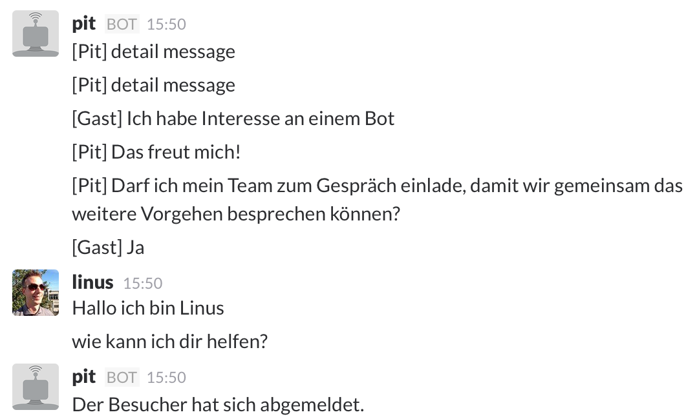

About botfabrik.ch
- Quesiton: Is there a market for bot development?
- Goal: A bot that sells bots
- About 2 weeks of development
- About 5 weeks online
- Initiative by Apptiva AG
Technology
- Wit.ai
- Socket.io
- Node js
- Botkit by Howdy
- Cloud Foundry @ swisscom
- Wit.ai
- Valid solution. Don't know about scalability
- Setup tricky
- Start with a small amount of stories
- We are going to look at alternatives
- SEO
- This is a challenge
- Solution not clear yet
- Integration with Slack
- Very easy
- Works surprisingly good
- Does not scale
- Sessions
- How to keep in touch with the visitor?
- Need so save the session locally
Engagement
- More contacts with botfabrik.ch than apptiva.ch
- People like to talk to bots... but not always with people
